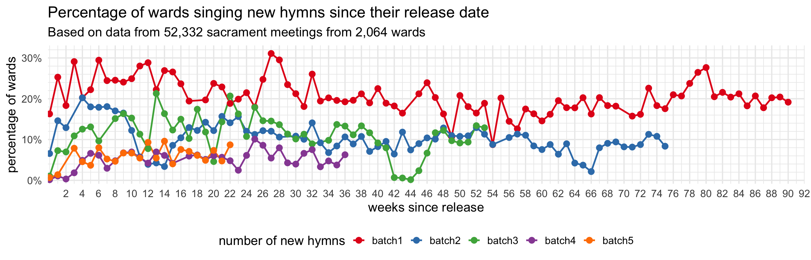

| Number of wards I have data from, by week | |
| Since September 21, 2025 | |
| date | wards |
|---|---|
| September 21 | 439 |
| September 28 | 646 |
| October 12 | 720 |
| October 19 | 586 |
| October 26 | 603 |
| November 02 | 690 |
| November 09 | 673 |
| November 16 | 719 |
| November 23 | 678 |
| November 30 | 691 |
| December 07 | 721 |
| December 14 | 686 |
| December 21 | 415 |
| December 28 | 355 |
| January 04 | 282 |
| January 11 | 649 |
| January 18 | 75 |
The Fifth Batch of New Hymns!
general
frequency
new hymns
On September 18, 2025, the church released the fifth batch of new hymns, which features another African American spiritual, a hymn written by a Tongan saint, and lyrics written by President Nelson. In previous posts, I have covered in detail the first, second, third, and fourth batches of hymns and how they were incorporated into sacrament meetings. This page covers period since when the fifth batch came out and will update weekly as more data comes in.
Currently I have data from 9,628 sacrament meetings from 1,191 wards since September 21, 2025. Here’s how much data I have for each week so far, just so you have an idea of what I’m working with.
How many wards sang new hymns each week?
The following plot show what percentage of wards sang from each of the new batches of hymns, per week, since June 2024 when the new hymns started getting rolled out. I’ve included data from all batches just so you can compare them to each other.

The first two weeks of the fifth batch were pretty lukewarm. Very few wards sang those hymns. A few wards sang
There is a noticeable jump after General Conference though. More wards sang from the fifth batch on October 12 (7.9%) than even the best week of the fourth batch when it was the newest batch (August 24th: 6.8%). The bulk of this surge (about 62%) was, perhaps unsurprisingly because of President Nelson’s recent passing,
Since General Conference and through Christmastime, the fifth batch has held pretty constant at around 5%–10% of wards each week. Meanwhile, the other batches (notably the second and third) experience some slumps during Christmas time.
A noteworthy landmark is that October 26 was the day where the most number of wards sang at least one new hymn: about 55%. We’ve seen a handful of weeks were right around half of wards sang new hymns, but that day was quite a bit more than others. We hit came close to this again on November 30, presumably as many wards started to sing the new Christmas hymns. In January 2026, we’re seeing even more wards singing new hymns.
An interesting trend generally is that the first batch of hymns continues to be the most popular among any of the other ones. Even a year and a half after its release it still outperforms almost all of the more recent hymns.
Here’s another version of the same plot but instead of the actual dates, it’s in terms of how many weeks since the batches came out. This version of the plot is useful to spot any parallel trends across the batches, especially in the first few weeks of their release.

In this version of the plot, it’s easier to compare batches. Thanks to that post–General Conference surge, the fifth batch was nearly as popular as the third batch for one week. Since then, it seems to be about as popular as the fourth batch was around this time. But it’s still not super popular: it’s as common to sing fifth batch hymns as it was to sing second batch hymns during Christmastime 2024.
What hymns are most popular?
The following table shows the hymns from the fifth batch in order of how popular they are.
| Approximate percentage of wards new hymns have been sung in | |
| Since June 15, 2025 | |
| Hymn | percent of wards |
|---|---|
| Go Tell It on the Mountain (1208) | 11.50% |
| Our Prayer to Thee (1048) | 7.80% |
| Help Us Remember (1043) | 5.70% |
| Thou Gracious Lord, Whose Mercy Lends (1042) | 5.00% |
| This Day Is a Good Day, Lord (1051) | 4.80% |
| Little Baby in a Manger (1209) | 3.50% |
| Can You Count the Stars in Heaven? (1046) | 2.20% |
| Jesus Is the Way (1045) | 2.10% |
| Stand by Me (1050) | 1.80% |
| He Cares for Me (1047) | 1.60% |
| How Did the Savior Minister? (1044) | 1.30% |
| Joseph Prayed in Faith (1049) | 0.20% |
The most popular hymn during this batch is
A distant second is
The next one,
The rest of the hymns trail behind. I personally am a fan of
There is a clear least popular hymn,
What hymns are most popular each week?
This plot shows how popular each hymn is each week. Out of all the fifth batch hymns sing in a given week, what percentage of them were

For some weeks, particularly in the beginning, the data is sparse, so it’s important to to put too much weight into the percentages. But it is clear that
When during meetings are these hymns sung?
This table shows when during sacrament meetings these hymns have been sung.
| When were new hymns sung in sacrament meeting? | ||||
| Since September 21, 2025 | ||||
| New Hymn | Opening | Sacrament | Intermediate | Closing |
|---|---|---|---|---|
| Thou Gracious Lord, Whose Mercy Lends (1042) |
40%
|
0%
|
29%
|
31%
|
| Help Us Remember (1043) |
1%
|
97%
|
1%
|
0%
|
| How Did the Savior Minister? (1044) |
44%
|
0%
|
17%
|
39%
|
| Jesus Is the Way (1045) |
43%
|
0%
|
21%
|
36%
|
| Can You Count the Stars in Heaven? (1046) |
38%
|
0%
|
46%
|
15%
|
| He Cares for Me (1047) |
54%
|
0%
|
15%
|
31%
|
| Our Prayer to Thee (1048) |
42%
|
7%
|
19%
|
31%
|
| Joseph Prayed in Faith (1049) |
0%
|
0%
|
50%
|
50%
|
| Stand by Me (1050) |
43%
|
0%
|
21%
|
36%
|
| This Day Is a Good Day, Lord (1051) |
55%
|
0%
|
14%
|
31%
|
| Go Tell It on the Mountain (1208) |
41%
|
0%
|
25%
|
34%
|
| Little Baby in a Manger (1209) |
51%
|
0%
|
26%
|
23%
|
| Note: Each row adds up to 100%. | ||||
Like many other hymns and batches of hymns, each hymn here has their own story. So some hymns are more common as opening hymns while others are more common later in the meeting, and that’s true generally. The clearest pattern is
Conclusion
That’s all for now. Overall, there are some cool things we learn from this batch. On the one hand, more wards are singing at least one new hymn each week. But, as seen in the first plot above, the first batch is where all the action is at. All batches are getting some attention, but the fifth batch is not doing any better than any of the other ones. In general, it seems like people are still enthusiastically singing new hymns, but not all the new hymns.
We’re due for a sixth batch anytime now I believe, so I can’t wait to see what we’ll get to sing soon!